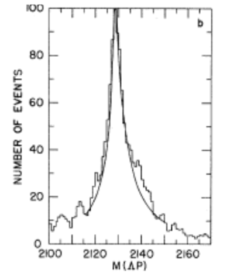
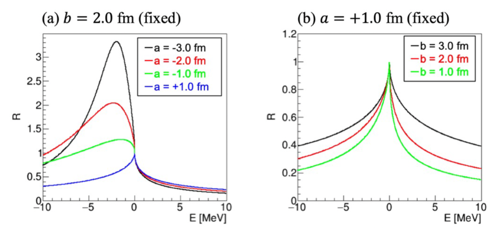

物理的な動機・背景 (Physics Motivation)
ハイペロンと核子の相互作用の謎
陽子と中性子が「強い力（核力）」で結合して「重陽子」ができることはよく知られています。では、ストレンジクォークを含むハイペロン（Σ粒子やΛ粒子など）は、核子と結合できるのでしょうか？ハイペロンと核子の相互作用を解明することは、単なる原子核物理の興味に留まらず、超高密度状態である「中性子星」の中心部で何が起きているのかを理解するためにも不可欠なテーマです。
過去の実験における「ΣNカスプ」の発見
過去の実験において、K-ビームを重陽子に当てた反応で、ちょうどΣ粒子と核子（N）が生成される閾値のエネルギー付近において、「ΣNカスプ」と呼ばれる鋭いピーク（事象の増大）が観測されました。量子力学の散乱理論によれば、閾値に鋭いカスプが現れることは、そのすぐ近くに「極（Pole）」が存在することを強く示唆します。しかし、これがストレンジクォークを含む重陽子のような「不安定な束縛状態」の証拠なのかについては、数十年来の未解決問題となっていました。

過去の実験データに見られる欠損質量スペクトルの概念図。ΣN生成閾値にぴったり一致する位置に「カスプ（尖点）」と呼ばれる事象の増大が現れています。
Dalitz理論と散乱長によるアプローチ
この長年の謎に対して、Dalitzらによる理論研究は重要な糸口を与えました。彼らの研究によって、この極の位置は、ΣN間の相互作用を特徴づける「散乱長（a + ib）」と密接に関係付けられることが明らかになりました。例えば、実部 a の値が負であった場合には、ΣNの二体の束縛状態（重陽子のような状態）が存在することを意味します。また、虚部 b の値は、ΣNチャンネルとΛNチャンネル間の結合力（遷移の強さ）を表すパラメータとなっています。以下の図に示すように、「ΣNカスプ」のスペクトル形状は、これら散乱長 (a + ib [fm]) のパラメータ値に依存して大きく変化することがわかっています。

散乱長（a + ib [fm]）によるΣNカスプ形状の変化の理論計算。散乱長パラメータによってピークの形が鋭く変化します。
この理論的な性質を使って、E90実験ではΣNカスプの形状を極めて正確に測定することにより、ΣN間の散乱長を精度良く求めることを目指しています。
実験の概要 (The Experiment)
J-PARCのK1.8ビームラインの高強度K-ビーム、高分解能S-2Sスペクトロメータ、そして崩壊粒子を捉えるHypTPCを組み合わせ、1.4 GeV/cでの d(K-, π-) 反応を精密測定します。過去の実験を凌駕する世界最高分解能（欠損質量分解能 0.4 MeV）と圧倒的な高統計のデータにより、散乱長を高精度に測定し、Σ粒子と核子が重陽子のような束縛状態を形成するのか否かを調べます。